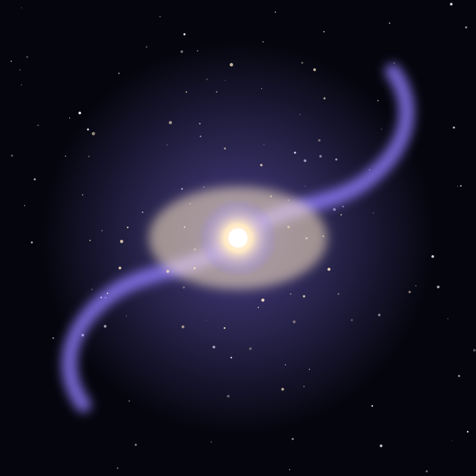

Galaxy
Milky Way Galaxy
Our home galaxy: a barred spiral of 100 to 400 billion stars, with a supermassive black hole at its centre.
Object 23 of 26

Key facts
- Distance to centre
- 26,000 light-years
- Diameter
- 100,000-180,000 light-years
- Stars
- 100-400 billion
- Type
- Barred spiral (SBbc)
- Age
- ~13.6 billion years
- Central black hole
- Sagittarius A* (4.15 million Suns)
- Sun's orbit
- Once per ~230 million years
- Nearest large galaxy
- Andromeda
Overview
The Milky Way is the galaxy we live in — a barred spiral containing 100 to 400 billion stars, including the Sun. Seen from a dark site it is a luminous band arcing overhead: the combined light of billions of distant suns too far apart to resolve individually.
The name comes from the Greek galaktikos, 'milky', by way of the Latin via lactea. The Romans thought it was a spilled stream of milk, and mythologies around the world have offered their own stories for the same bright road.
Structure
Our galaxy is organised into a central bar roughly 10,000 light-years long, surrounded by spiral arms of gas, dust and young stars. The Sun sits in a minor spur between two major arms, 26,000 light-years from the centre.
At the very core lies Sagittarius A*, a supermassive black hole of 4.15 million solar masses imaged by the Event Horizon Telescope in 2022. The galaxy also has a diffuse halo of old stars and globular clusters extending far beyond the visible disk.
Place in the Local Group
The Milky Way is one of two large spirals in the Local Group, a collection of roughly 80 galaxies bound by gravity. The other giant is Andromeda, and the two are falling toward each other at about 110 kilometres per second.
In roughly 4.5 billion years they will merge into a single elliptical galaxy sometimes called Milkomeda. The Sun will likely survive the encounter, though the solar system's position in the merged galaxy will be completely different.
Seeing It
The Milky Way is visible to the naked eye wherever the sky is genuinely dark, but light pollution has hidden it from most of North America and Europe. It covers only a small fraction of the sky, yet contains the overwhelming majority of what we can see of the universe without a telescope.
The best views come from new moons in summer, away from city lights, when the bright core of the galaxy rises in the south. A pair of binoculars is enough to resolve star clouds, dark dust lanes and clusters too faint for the unaided eye.